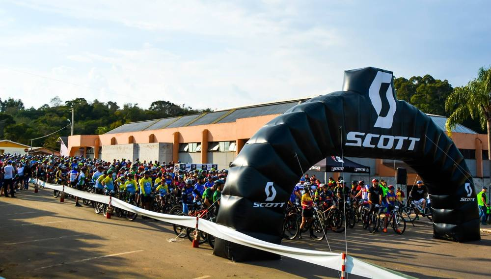
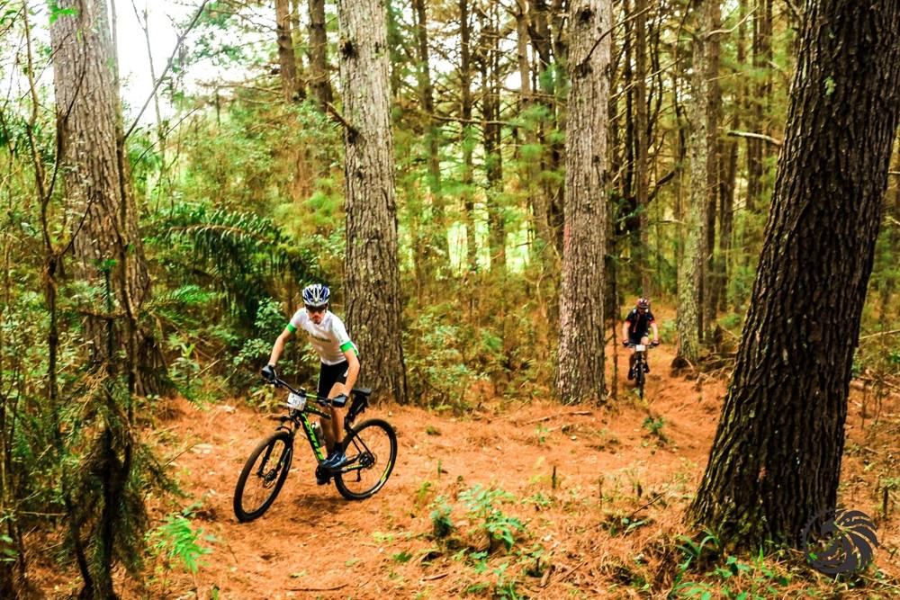
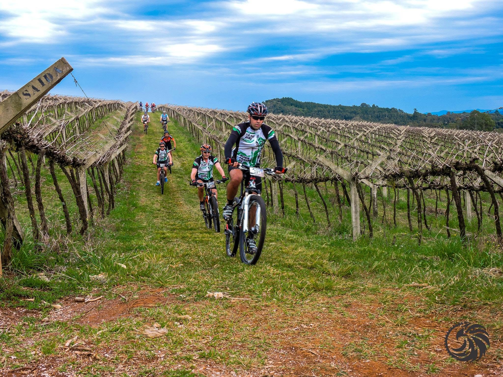
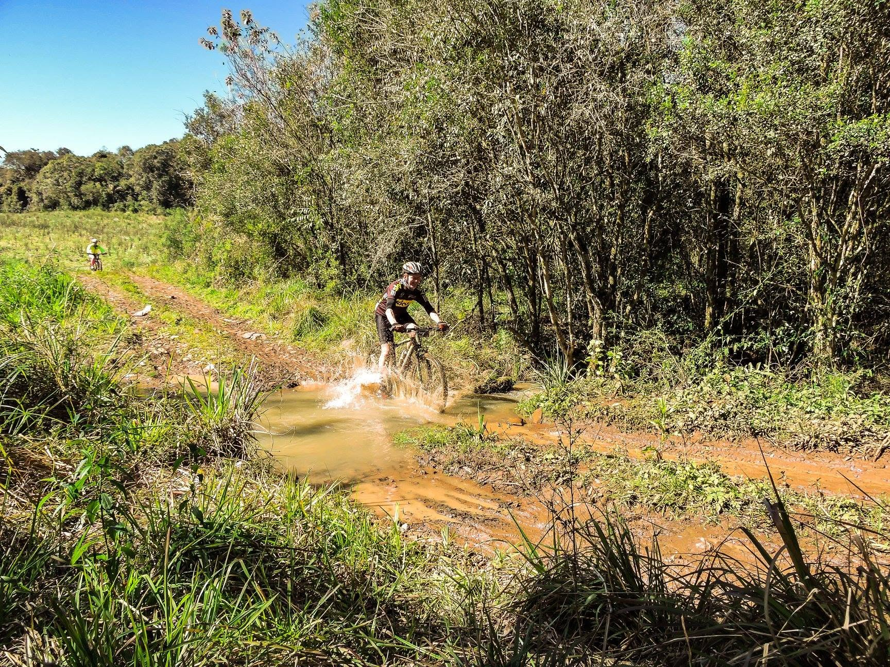
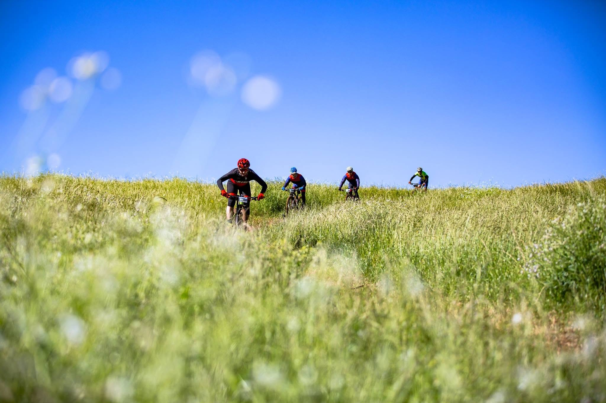
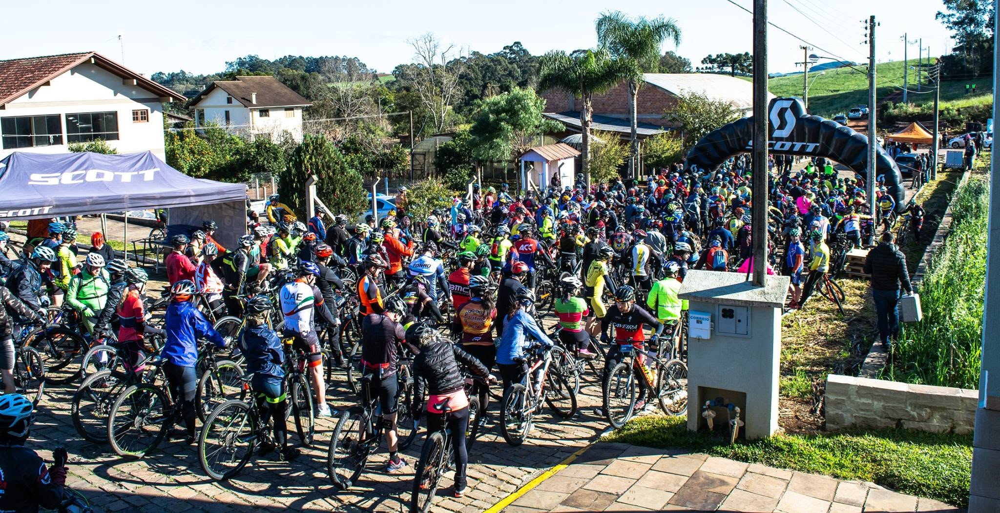

Sobre o passeio
O 4° Passeio Ciclístico dos Falcões é um evento de cicloturismo pelas estradas e trilhas do interior de Fagundes Varela, passando por diversas localidades do município até a sede. Reúne ciclistas da região e de outras cidades num domingo de confraternização sobre duas rodas.
Público estimado: 200 ciclistas
Promoção: Falcões Ciclismo Fagundes Varela (FCF)
Programação
- 7hRecepção dos ciclistas: inscrições, café da manhã e sorteio de brindes
- 8h30Largada para o passeio pelas estradas do interior, trajetos de 20 km e 50 km
- 17hEncerramento do evento
O que está incluso
Café da manhã
Medalha
Pontos de apoio / hidratação
Numeração do ciclista
Sorteio de brindes
Fotos dos passeios anteriores
Confira alguns momentos das edições passadas.






Você será redirecionado para o formulário oficial de inscrição (valor e chave Pix estão lá)